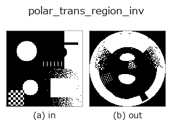

geometry op• データ種: region → region
• 呼び出し: fullseye.apply(img, "polar_trans_region_inv", a=0.5, b=0.5) (2-D は 1 画像 + 2 スカラつまみ a,b∈[0,1] のモデル)
• HALCON 相当: polar_trans_region_inv(意味・パラメータは HALCON リファレンスが参考になる)

*図は合成の入力 128×128 で実際に走らせた出力。左が入力、右が出力。点群は上から見た散布(明るさ = z)、1-D 列は折れ線、体積は z 方向の最大値投影、動画は中央フレーム、複素画像は振幅、絵にならない返り値は値そのもの。*
*つまみ a は出力を変えない(実測: 0.1 / 0.5 / 0.9 で同一)。*
*つまみ b は出力を変えない(実測: 0.1 / 0.5 / 0.9 で同一)。*
段階(前置きの op → この op。左から順):
▸ polar_trans_region_inv: stages (docs site)
別の画像でも(合成シーン / 写真 / 硬貨。上段が入力、下段がその出力。つまみは既定):
▸ polar_trans_region_inv: other inputs (docs site)
極座標表現を通常の直交座標（デカルト座標）へ逆変換する（`cv2.warpPolar の逆写像モード）。中心から半径 min(h,w)/2 の円盤の外側は 0 で埋め、_rebinarise により 0.5 しきい値で二値領域に戻す。a, b は未使用（polar_trans_image_inv と同じ _sh_geom の polar_inv` 分岐を共有）。
HALCON の `polar_trans_region_inv（極座標領域を元のデカルト座標系の領域に戻す演算）に相当。実装上、円盤境界付近 1 画素程度は補間の丸めで非決定的になりうるため外側を明示的に 0 で塗って安全側に倒している（2026-09-02 修正済み、詳細は _sh_geom の polar_inv` 分岐のコメント参照）。
• サンプルデータ カタログ(DL URL / ライセンス) — 2-D は skimage.data(BSD/public)+ 合成、3-D は実データ源(Stanford/PDS 等)の DL URL。
• 演算子の来歴・参考文献 — この op 族の元になった研究/手法の出典。
• アルゴリズムの正典(著者・年)と用途は上記ファミリ使い方ガイドに記載。
下のプログラムは実際に走ることを確かめてある(図と同じ入力)。Studio のヘルプではこのブロックがボタンになり、その場で読み込んで実行できる。
threshold 0.50 0.50 polar_trans_region_inv 0.50 0.50
▸ Load this pipeline · Load & run
• gallery2d_geometry — py -3.11 examples/gallery2d_geometry.py
region を入力に取れる)identity · reg_erode · reg_dilate · reg_open · reg_close · fill_holes · select_largest · remove_small
geometry)rotate_img · rescale_img · affine_warp · sk_swirl · mirror_image · transpose_region · rotate_image · zoom_image_factor
*Provenance: ops.py — 2D operator registry. この per-op ノートは tools/opdocs.py md が自動生成(手編集しない)。*
© 2026 Kazufumi Furuse — Fullseye operator documentation. Licensed under Apache-2.0.
{kind=link}
{kind=link}